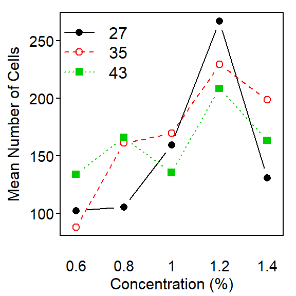
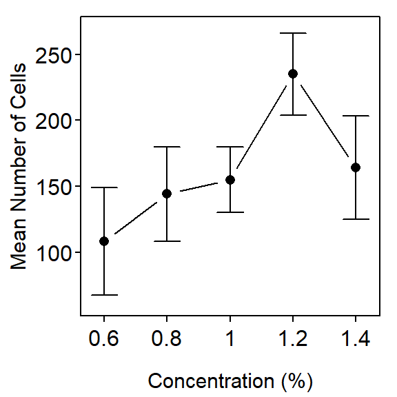
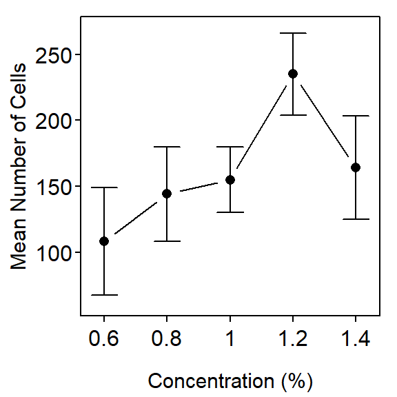
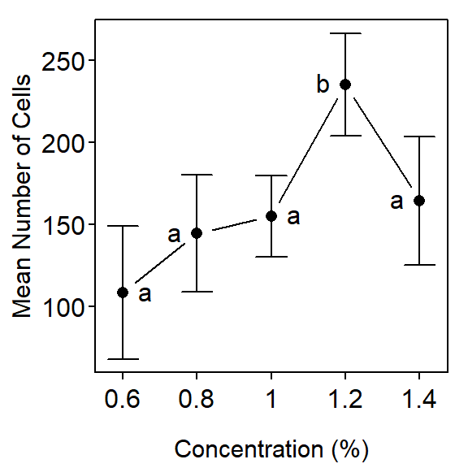

Bacteria Example
What is the optimal temperature (27,35,43C) and concentration (0.6,0.8,1.0,1.2,1.4% by weight) of the nutrient, tryptone, for culturing the Staphylococcus aureus bacterium. Each treatment was repeated twice. The number of bacteria (millions Colony Forming Units (CFU)/mL) was recorded in Bacteria.csv.
> setwd("C:/aaaWork/Web/GitHub/NCMTH207/modules/Anova-2Way")
> bact <- read.csv("Bacteria.csv")
> str(bact)'data.frame': 30 obs. of 3 variables:
$ temp : int 27 27 27 27 27 35 35 35 35 35 ...
$ conc : num 0.6 0.8 1 1.2 1.4 0.6 0.8 1 1.2 1.4 ...
$ cells: int 55 120 186 260 151 82 166 179 223 178 ...> bact$temp <- factor(bact$temp)
> bact$conc <- factor(bact$conc)> ylbl <- "Mean Number of Cells"
> conclbl <- "Concentration (%)"
> templbl <- "Temperature (C)"Initial Summaries
> Summarize(cells~temp*conc,data=bact,digits=0) temp conc n mean sd min Q1 median Q3 max
1 27 0.6 2 102 67 55 79 102 126 150
2 35 0.6 2 88 8 82 85 88 91 94
3 43 0.6 2 134 27 115 124 134 144 153
4 27 0.8 2 106 21 91 98 106 113 120
5 35 0.8 2 161 7 156 158 161 164 166
6 43 0.8 2 166 28 146 156 166 176 186
7 27 1 2 160 37 133 146 160 173 186
8 35 1 2 170 13 160 165 170 174 179
9 43 1 2 136 1 135 135 136 136 136
10 27 1.2 2 267 10 260 264 267 270 274
11 35 1.2 2 230 9 223 226 230 233 236
12 43 1.2 2 208 28 189 199 208 218 228
13 27 1.4 2 131 28 111 121 131 141 151
14 35 1.4 2 198 29 178 188 198 209 219
15 43 1.4 2 164 28 144 154 164 173 183Model Fitting and Summary
> lm1 <- lm(cells~temp*conc,data=bact)
> anova(lm1) Df Sum Sq Mean Sq F value Pr(>F)
temp 2 1313 656.4 0.8557 0.44473
conc 4 51596 12899.1 16.8154 2.041e-05
temp:conc 8 14703 1837.8 2.3958 0.06886
Residuals 15 11507 767.1 > fitPlot(lm1) # left
> fitPlot(lm1,interval=FALSE,change.order=TRUE,xlab=conclbl,ylab=ylbl,legend="topleft")
> fitPlot(lm1,which="temp",ylim=c(60,270),xlab=templbl,ylab=ylbl) # left
> fitPlot(lm1,which="conc",ylim=c(60,270),xlab=conclbl,ylab=ylbl) 

Multiple Comparisons
> bact.mc1 <- glht(lm1,mcp(conc="Tukey"))
> summary(bact.mc1) Estimate Std. Error t value p value
0.8 - 0.6 = 0 3.0 27.69657 0.1083167 0.999964901
1 - 0.6 = 0 57.0 27.69657 2.0580166 0.287200856
1.2 - 0.6 = 0 164.5 27.69657 5.9393636 0.000242605
1.4 - 0.6 = 0 28.5 27.69657 1.0290083 0.838160459
1 - 0.8 = 0 54.0 27.69657 1.9496999 0.335021470
1.2 - 0.8 = 0 161.5 27.69657 5.8310469 0.000296171
1.4 - 0.8 = 0 25.5 27.69657 0.9206916 0.884522412
1.2 - 1 = 0 107.5 27.69657 3.8813470 0.010935822
1.4 - 1 = 0 -28.5 27.69657 -1.0290083 0.838177101
1.4 - 1.2 = 0 -136.0 27.69657 -4.9103553 0.001548588> fitPlot(lm1,which="conc",xlab=conclbl,ylab=ylbl)
> addSigLetters(lm1,which="conc",lets=c("a","a","a","b","a"),pos=c(4,2,4,2,2))